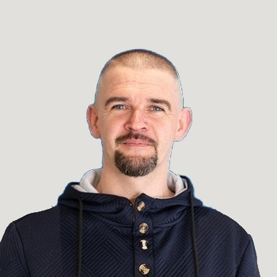

Une appli déjà utilisée par un vrai client
Planning Salon sert à un salon pour gérer ses rendez-vous : je sais livrer quelque chose qui marche pour de vrai.
Disponible dès maintenant pour une alternance
Développeur full stack · en recherche d'alternance
Go, JavaScript, React et SQL. Une appli déjà utilisée par un vrai client, et un intérêt fort pour la sécurité du code.

Alternance 1 à 2 ans
Rythme 3 semaines en entreprise, 1 semaine à l'école
Diplôme RNCP 6, niveau Bac+3/4 · Zone01 Rouen
Mobilité Rouen, Beauvais, Lille, Paris
Planning Salon sert à un salon pour gérer ses rendez-vous : je sais livrer quelque chose qui marche pour de vrai.
Chez Leroy Merlin : travail en équipe, priorités à gérer, problèmes à régler avec les autres services.
À Zone01, il n'y a pas de cours magistraux : je cherche, je teste et je demande de l'aide à mes pairs quand il le faut.
Tout le monde ne lit pas du code, et un visuel parle plus. Ici, chaque projet est montré en animation : on comprend ce qu'il fait en quelques secondes, même sans bagage technique.
Utilisée par un vrai salon
Le salon est un vrai client : le code et l'appli ne sont pas publics. Je peux faire une démonstration en entretien.
Projet en cours
Un assistant d'aide basé sur l'IA, que je construis en équipe.
Aussi : Mini-cyber, une petite boîte à outils de sécurité en Python/Flask, avec tests et intégration continue GitHub Actions.
Le soir, je me forme à la défense des systèmes : lire des logs, analyser du trafic réseau, retrouver le déroulé d'une attaque. Ça m'aide à écrire du code plus sûr.
En ce moment Je pousse mon apprentissage en cybersécurité : je suis un parcours Blue Team (analyse de logs, SIEM, détection et investigation d'attaques).
CyberDefenders · labs Blue Team réussis
Un SIEM Wazuh installé dans Docker sur mon PC : je collecte les journaux, je cherche des alertes et je les relie aux techniques MITRE ATT&CK.
Wazuh · Docker · Sigma · YARA · MITRE ATT&CK
Autres badges : IBM SkillsBuild (Explore Emerging Tech, agents IA), Microsoft Learn (GitHub Copilot), DataCamp (Introduction to Git).
Un parcours pas en ligne droite, mais toujours concret : des flux à gérer, des problèmes à régler, et maintenant du code.
Stocks, commandes fournisseurs, prix de revient
Site SEVESO (Butagaz), Délifrance, Imerys Toiture
Flux, priorités, WMS LOGIN, anomalies
Concepteur développeur d'applications, RNCP 6 (Bac+3/4)
Développeur full stack, 1 à 2 ans
Les outils que j'utilise, et les projets où je m'en suis servi.
CyberGuard · Net-Cat · Lem-in
Planning Salon · Tableau de bord GraphQL
Planning Salon : tables, règles RLS, contraintes
Planning Salon (en ligne pour un vrai salon)
Tableau de bord GraphQL
Mon lab Wazuh, mon poste de travail
Tous mes projets · intégration continue de Mini-cyber
Projet public à venir
Disponible dès maintenant
Je suis disponible dès maintenant pour une alternance de 1 à 2 ans. Un appel de 10 minutes suffit pour voir si mon profil vous correspond.